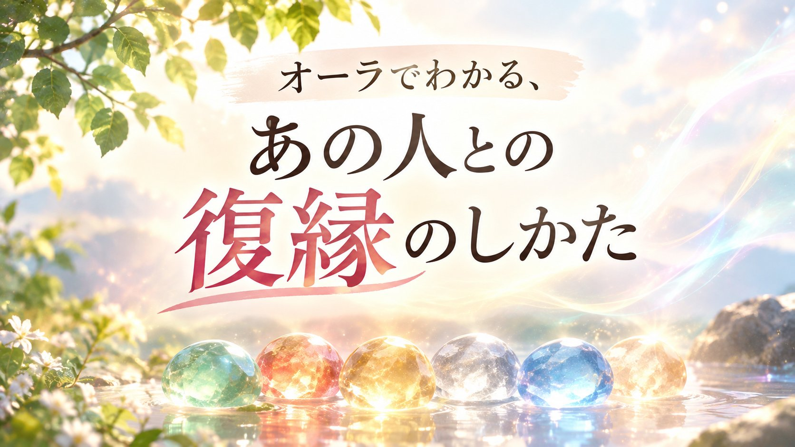

無料鑑定の感想をくださった方へ
無料鑑定の感想を送ってくださって、
ありがとうございます。
お礼に、
鑑定ではお伝えしきれなかったお話をさせてください。
あなたとあの人のオーラから視る、
復縁のしかたです。
オーラは、
毎日、毎週、毎月、毎年
少しずつ変化しています。
そしてそれは
あなたのオーラと影響しあい
あなたの考え方や気持ち、
行動を変えてしまうんです。
あなたの持っているオーラと
世界を包むオーラが一致している時は、
胸のあたりがあたたかくなって、
自然と力が出ます。
逆に、合わない日は、
理由もないのに疲れたり、
気持ちがわからなくなったりします。
これは、
お相手も同じです。
連絡が来ない日、
冷たく感じる日があっても、
それは気持ちが冷めたからとは限りません。
お相手もオーラの影響を
受けているだけのことが多いんです。
だから復縁は、
いつ動くか、
どんな言葉を渡すかで、
届き方がまったく変わります。
あなたのオーラと、
あの人のオーラを探して読んでみてください。
鑑定書にどちらも書かれているはずです。
木・緑のオーラは、
伸びる力、始める力です。
止まっているのが苦手で、
自分から道を作ってきた人です。
水のオーラが降りてくる日と、
あなたと同じ木・緑のオーラが降りてくる日です。
水を吸った木のように、
気持ちがのびのびと伸びていきます。
新しいことを始めたくなって、
体も軽くなります。
復縁で動くなら、
この日です。
あなたから、
一歩だけ踏み出してください。
長い言葉はいりません。
「最近どうしてる？」のような、
あの人が軽く返せる一言で十分です。
逆に、
伸びる力が強くなりすぎると、
返事を待てずに次の手を打ちたくなります。
一度送ったら、
あとは返事が来るまで待ってください。
鑑定で木のオーラが少し多めと言われた方は、
送る前に一晩だけ置いてください。
銀色・金色のオーラが降りてくる日です。
枝を切られるように、
伸びたい気持ちが急に止まります。
やる気が出ない、
前を向けない。
「もう無理なのかもしれない」と、
あきらめたくなるのもこの日です。
でもそれは、
縁の糸が切れたからではありません。
あなたの伸びる力が、
すこし止められているだけです。
この日は、
決めつけないでください。
連絡をやめる、
SNSを消す、
そういう大きな決めごとは、
あなたが輝く日まで待ってください。
鑑定で木のオーラが少なめと言われた方は、
とくにこれを感じやすいはずです。
そんな日は、
部屋の植物でも窓の外の木でもいいので、
しばらく眺めてください。
木は、
急がなくても伸びています。
輝いているときは、
向こうから誘ってきたり、
会う予定を立ててくれたりします。
銀色・金色のオーラが降りる日は、
急に黙ったり、
予定を変えたりすることがあります。
気持ちが離れたわけではありません。
伸びたい気持ちが止まって、
どう動けばいいか考え込んでいるだけです。
木・緑のあの人が離れていくのは、
「この先がない」「自由に動けない」と感じたときです。
だから復縁で届くのは、
過去の話ではなく、
これからの話です。
「ずっと応援してる」
「あなたのやりたいこと、聞かせてほしい」
そんな、
あの人が伸びていける言葉が届きます。
逆に、
責める言葉や答えを迫る言葉は、
枝を切るのと同じです。
連絡するなら、
あの人が輝く、
水か木・緑のオーラが降りる日にしてください。
火のオーラは、
照らす力、与える力です。
好きな人には、
言葉も時間も気持ちも、
惜しまず渡せる人です。
木・緑のオーラが降りてくる日と、
あなたと同じ火のオーラが降りてくる日です。
薪をくべてもらうように、
あなたの火があたたかく、
大きくなります。
言葉がすっと出てきて、
笑顔も自然に増えていきます。
復縁で動くなら、
この日です。
伝えたかったことをひとつだけ、
言葉にしてください。
あなたの言葉が、
いちばんまっすぐ届く日です。
逆に、
火が大きくなりすぎると、
「早く返事がほしい」「どう思ってるのか知りたい」と、
気持ちが前に出すぎてしまいます。
長い文章や、
何通も続けて送るのは、
あの人には熱すぎて届きません。
鑑定で火のオーラが少し多めと言われた方は、
伝えるのは一通だけと決めておいてください。
水のオーラが降りてくる日です。
火が小さくなって、
胸のあたりの温度がすっと下がります。
あの人への気持ちがわからなくなる、
何をしても楽しくない。
でもそれは、
気持ちが冷めたからではありません。
あなたの火が、
すこし小さくなっているだけです。
この日は、
結論を出さないでください。
不安をそのまま言葉にして送るのも、
あなたが輝く日まで待ってください。
小さくなった火で書いた言葉は、
あの人には暗く届いてしまいます。
鑑定で火のオーラが少なめと言われた方は、
とくにこれを感じやすいはずです。
そんな夜は、
部屋の明かりを落として、
灯りをひとつだけつけてください。
小さな火を見ているうちに、
あなたの火も戻ってきます。
輝いているときは、
連絡が増えて、
言葉もやさしくなります。
水のオーラが降りる日は、
たくさん話してくれたあとでも、
急に静かになることがあります。
気持ちが離れたわけではありません。
火が小さくなって、
言葉を出す元気がないだけです。
火のあの人が離れていくのは、
「一緒にいても楽しくない」「自分の火が届いていない」と感じたときです。
だから復縁で届くのは、
重たい言葉ではなく、
明るい言葉です。
「ありがとう」
「あのときの〇〇、うれしかった」
あの人がくれたものを、
ちゃんと受け取っていたことを伝えてください。
火は、
届いたとわかると、
また燃えはじめます。
逆に、
不安の言葉や重たい相談は、
火に水をかけるのと同じです。
連絡するなら、
あの人が輝く、
木・緑か火のオーラが降りる日にしてください。
アンバーのオーラは、
受けとめる力、育む力です。
一度大切にしたものを、
ずっと大切にしていられる人です。
火のオーラが降りてくる日と、
あなたと同じアンバーのオーラが降りてくる日です。
火にあたためられた大地のように、
心がやわらかく、
豊かになります。
気持ちが落ち着いて、
人にもやさしくなれます。
復縁で動くなら、
この日です。
アンバーのオーラの方は、
待つことが得意なぶん、
待ちすぎてしまうことがあります。
この日だけは、
あなたから動いてください。
落ち着いた気持ちで送る言葉は、
あの人に安心として届きます。
逆に、
アンバーのオーラが強くなりすぎると、
同じことを何度も考えたり、
過去のことから離れられなくなったりします。
「あのとき、ああしていれば」と考えはじめたら、
その日はもう送らなくて大丈夫です。
鑑定でアンバーのオーラが少し多めと言われた方は、
あの人のことを考えるのは一日一回と決めておいてください。
木・緑のオーラが降りてくる日です。
木が根を張って、
固まっていた土がかき回されます。
予定を崩される、
急かされる、
気持ちが落ち着かない。
あの人のSNSを何度も見てしまうのも、
この日に起きやすいことです。
でもそれは、
あなたの心が弱いからではありません。
あなたの足元が、
すこしかき回されているだけです。
この日は、
あの人のことを確かめに行かないでください。
見れば見るほど、
足元はかき回されていきます。
鑑定でアンバーのオーラが少なめと言われた方は、
とくにこれを感じやすいはずです。
そんな日は、
立ち上がって、
足の裏を床にしっかりつけてください。
頭に集まっていたものが、
すっと下へ降りていきます。
輝いているときは、
落ち着いてあなたの話を聞いてくれて、
約束も守ってくれます。
木・緑のオーラが降りる日は、
返事が遅くなったり、
余裕がなさそうに見えたりします。
気持ちが離れたわけではありません。
足元がかき回されて、
自分のことで手一杯になっているだけです。
アンバーのあの人が離れていくのは、
「急かされた」「安心できなかった」と感じたときです。
そして一度離れると、
動き出すまでに時間がかかります。
だから復縁で届くのは、
答えを求める言葉ではなく、
変わらない安心です。
「元気にしてる？」
「何かあったら、いつでも言ってね」
答えを求めない言葉を、
間をあけて、
静かに渡してください。
アンバーのあの人は、
言えずにいることを抱えています。
それを言っても大丈夫だと思えたとき、
あの人のほうから動き出します。
逆に、
期限を切ることや、
何度も返事を求めることは、
いちばん遠ざかってしまう方法です。
連絡するなら、
あの人が輝く、
火かアンバーのオーラが降りる日にしてください。
銀色・金色のオーラは、
決める力、磨く力です。
一度信じたものを、
まっすぐ守り抜ける人です。
アンバーのオーラが降りてくる日と、
あなたと同じ銀色・金色のオーラが降りてくる日です。
大地の中で磨かれるように、
あなたの輝きが増していきます。
頭が冴えて、
迷っていたことにも答えが出やすくなります。
復縁で動くなら、
この日です。
あの人に伝えたいことを、
短く、はっきり言葉にしてください。
謝りたいことがあるなら、
この日に一度だけ伝えてください。
あなたのまっすぐな言葉は、
この日にいちばんきれいに届きます。
逆に、
銀色・金色のオーラが強くなりすぎると、
白か黒か、
はっきりさせたくなります。
「戻る気がないなら言って」のような言葉は、
あの人を追い詰めてしまいます。
鑑定で金のオーラが少し多めと言われた方は、
送る前に「今どう感じているか」を一度だけ確かめてください。
火のオーラが降りてくる日です。
熱で溶かされるように、
あなたの形が揺らぎます。
決めていたことに自信がなくなる、
イライラしてしまう。
でもそれは、
あなたが冷たいからではありません。
あなたのまっすぐな形が、
すこし熱で揺らいでいるだけです。
この日は、
あの人に強い言葉を送りやすい日です。
「もういい」
「さよなら」
そう打ちかけたら、
送らずに置いておいてください。
鑑定で金のオーラが少なめと言われた方は、
とくにこれを感じやすいはずです。
そんな日は、
息をゆっくり長く吐いてください。
吐ききると、
肩の力が抜けていきます。
答えは、
その日に出さなくて大丈夫です。
輝いているときは、
はっきりした言葉で、
あなたへの気持ちを伝えてくれます。
火のオーラが降りる日は、
言葉が少しきつくなったり、
冷たく見えたりします。
気持ちが離れたわけではありません。
自分の形が揺らいで、
それを立て直そうとしているだけです。
銀色・金色のあの人が離れていくのは、
「話が通じない」「気持ちばかりで筋が通らない」と感じたときです。
だから復縁で届くのは、
長い気持ちではなく、
短くて筋の通った言葉です。
「あのときは私がよくなかった。ごめんね」
それだけを、
一度だけ伝えてください。
逆に、
言い訳を重ねたり、
泣きついたりすると、
あの人はかえって心を閉ざします。
一度決めたら守る人なので、
「もう一度ちゃんと向き合おう」と思えたとき、
まっすぐ戻ってきます。
連絡するなら、
あの人が輝く、
アンバーか銀色・金色のオーラが降りる日にしてください。
水のオーラは、
包み込む力、流れる力です。
相手に合わせて、
形を変えられる人です。
銀色・金色のオーラが降りてくる日と、
あなたと同じ水のオーラが降りてくる日です。
岩の間から湧き出る水のように、
心が澄んでいきます。
直感が冴えて、
人の気持ちもよくわかるようになります。
復縁で動くなら、
この日です。
ふと「今、連絡してみよう」と浮かんだら、
その直感を信じてください。
あの人に、
小さなお願いごとをしてみるのも合う日です。
「おすすめのお店、教えてほしい」くらいの、
あの人が応えやすいお願いです。
逆に、
水のオーラがあふれすぎると、
あの人に合わせすぎて、
自分がどうしたいのかわからなくなります。
都合のいいときだけ呼ばれる関係は、
復縁ではありません。
鑑定で水のオーラが少し多めと言われた方は、
返事をする前に「私はどうしたい？」と一度だけ自分に聞いてください。
アンバーのオーラが降りてくる日です。
流れがせき止められて、
進んでいたものが止まったように感じます。
返事が来ない、
話が進まない、
このまま止まってしまいそうで怖い。
でもそれは、
縁の糸が切れたからではありません。
あなたの流れが、
すこし留まっているだけです。
この日は、
止まった流れを無理に動かそうとしないでください。
追いかけて送った言葉は、
せき止められた水と一緒に、
あの人のところで止まってしまいます。
鑑定で水のオーラが少なめと言われた方は、
とくにこれを感じやすいはずです。
そんな夜は、
あたたかいお湯にゆっくり浸かってください。
体の中の水が、
また流れはじめます。
輝いているときは、
あなたに合わせてくれて、
連絡も自然に続きます。
アンバーのオーラが降りる日は、
返事が止まったり、
何を聞いても曖昧になったりします。
気持ちが離れたわけではありません。
流れが留まって、
言葉が出てこないだけです。
水のあの人が離れていくのは、
「息苦しい」「本音を言えない」と感じたときです。
だから復縁で届くのは、
問い詰める言葉ではなく、
流れていける言葉です。
「どうしたいの？」
「私のこと、どう思ってるの？」
この聞き方は、
水の人をいちばん固まらせてしまいます。
代わりに、
「最近どう？」
「あの曲、思い出して聴いてたよ」
答えなくてもいい言葉を、
そっと渡してください。
水は、
せき止めなければ、
自然と戻る場所へ流れていきます。
連絡するなら、
あの人が輝く、
銀色・金色か水のオーラが降りる日にしてください。
あなたのオーラと、
あの人のオーラ。
同じ日でも、
元気な人と疲れている人がいます。
あなたが元気な日に、
あの人は疲れているかもしれません。
あなたが落ち込んでいる日に、
あの人は動きたくなっているかもしれません。
すれ違いの多くは、
気持ちの問題ではなく、
その日に降りているオーラの
違いから生まれています。
だからこそ、
あなたが輝く日と、
あの人が輝く日が重なる日は、
言葉がいちばん届きやすい日です。
その日にどのオーラが降りているかは、
LINEでお伝えしていきます。
あなたのオーラとあの人のオーラを
思い出しながら、
読んでみてください🌿